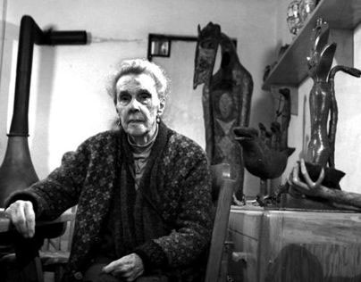

Leonora en México
Afirmar que Leonora Carrington se adelantó a su tiempo no hace justicia a la forma cómo rompió con las reglas sociales impuestas a una mujer de su época, ni a lo visionaria de su obra. Tampoco a las vicisitudes que la artista superó para convertirlas en fuente de creación.
Nacida en Inglaterra, vivió en México la mayor parte de su vida desde la década del cuarenta (excepto por algunos años en Nueva York y Chicago). En su casa-taller de la colonia Roma, crió a sus dos hijos Gabriel y Pablo Weisz, nacidos de su matrimonio con el fotógrafo húngaro Émerico Weisz. Fue en México donde Leonora Carrington desarrolló gran parte de su obra pictórica, escultórica y literaria, y donde dio forma a sus pensamientos sobre temas como lo místico, el feminismo, los imaginarios de las culturas antiguas y su propia autobiografía.

“La llegada a México fue un momento clave para Carrington por diversos motivos”, aseguró la historiadora de arte Tere Arcq, comisaria (junto con Carlos Martín) de la reciente exposición antológica en la Fundación MAPFRE de Madrid, “Leonora Carrington. Revelación”. “Llegó ‘al país surrealista por excelencia’ en palabras de André Breton. Lo maravilloso, lo mágico, que eran temas fundamentales para el surrealismo, en México forman parte de la vida cotidiana y eso le resultó fascinante”, continuó Arcq.
El encuentro en México con otras mujeres, como la pintora española Remedios Varo y la fotógrafa húngara Kati Horna también fue muy significativo. “Compartían intereses por temas como la magia, el tarot, la alquimia, la brujería, que nutrieron la imaginación de Carrington para crear obras donde las mujeres recuperan sus poderes y asumen un papel protagónico”, señaló Arcq.
Para la curadora de su más reciente antológica (quien, además, tuvo la oportunidad de conocer a la artista en persona y realizar otras exposiciones, como la gran retrospectiva del 2018 en el Museo de Arte Moderno de México), este fue un país que resultaba al mismo tiempo fascinante y aterrador para Leonora Carrington. “Cuando llegó a México le parecía un lugar muy exótico en varios sentidos: su gente, sus paisajes, la extraordinaria variedad de comida, plantas y animales. Le sorprendieron los rituales en torno a la muerte, en los que encontró ecos de la cultura celta de sus origines. Fue un lugar de encuentros maravillosos, de descubrimiento de culturales ancestrales”, describió Tere Arcq.
Sin embargo, no dejó de ver su lado oscuro. Por eso, tras la masacre estudiantil en Tlatelolco en 1968, Leonora Carrington huyo del país por un tiempo con sus hijos, rumbo a los Estados Unidos.
En México, Leonora Carrington alcanzó la culminación de su estilo personal. Realizó obras como las pinturas “La giganta” de 1946 y “Y entonces vimos a la hija del Minotauro” de 1953, que se encuentra en la colección del MoMA; durante los cuarenta y cincuenta se involucró en la producción textil, creando tapetes de la mano del maestro Ricardo Rosales. Su primera individual en México tuvo lugar en 1950, y su primera retrospectiva se dio 10 años después, en el Palacio de Bellas Artes (donde se acaba de presentar, en agosto y septiembre del 2023, el “Concierto para violín: L.E.O. El espacio onírico”, un homenaje a Leonora Carrington por la Compañía Nacional de Danza).
En 1963 el Museo Nacional de Antropología en la Ciudad de México le encargó el mural “El mundo mágico de los mayas”, que Carrington realizó tras haber vivido una temporada en Chiapas, donde entró en contacto con las poblaciones indígenas. La pieza manifiesta la fascinación de la artista por lo místico y por los imaginarios de las culturas prehispánicas.
Especialistas como Tere Arcq aseguran que se subestima el influjo que los vestigios arqueológicos y las mitologías vivas mesoamericanas tuvieron en la concepción de la obra de Carrington. “Creo que la principal razón es que, con la excepción de unas cuantas obras, por ejemplo, el famoso mural ‘El mundo mágico de los mayas’, los referentes a las culturas mesoamericanas no son tan evidentes”, reflexionó al respecto la propia Arcq. “Las obras de Carrington poseen una iconografía muy compleja y frecuentemente presentan sincretismos de diversas culturas y mitologías que le interesaban y estudiaba con avidez: Egipto, Mesopotamia, Asiria, el mundo celta, la antigüedad griega”, además de la mesoamericana.
Otras de sus piezas conviven con la ciudad. “Cocodrilo”, bronce de más de 8 metros de largo y 5 toneladas, una de sus más famosas esculturas, se reinstaló en Paseo de la Reforma en el 2006 (originalmente estuvo en el Bosque de Chapultepec). En el 2018 se inauguró el Museo Leonora Carrington con sedes en las ciudades de San Luis Potosí y Xilitla, que reúne varias de sus esculturas, así como litografías y otros objetos de la artista.
La última gran retrospectiva mexicana que tuvo en vida fue en 1994, en el Museo de Arte Moderno. En el 2000, fue nombrada Ciudadana de Honor del entonces D.F., así como condecorada con la Orden del Imperio Británico. La noche del 25 de mayo del 2011, Leonora Carrington murió a los 94 años, en ese México que la adoptó y que ella hizo para sí, y donde trabajó hasta el final.